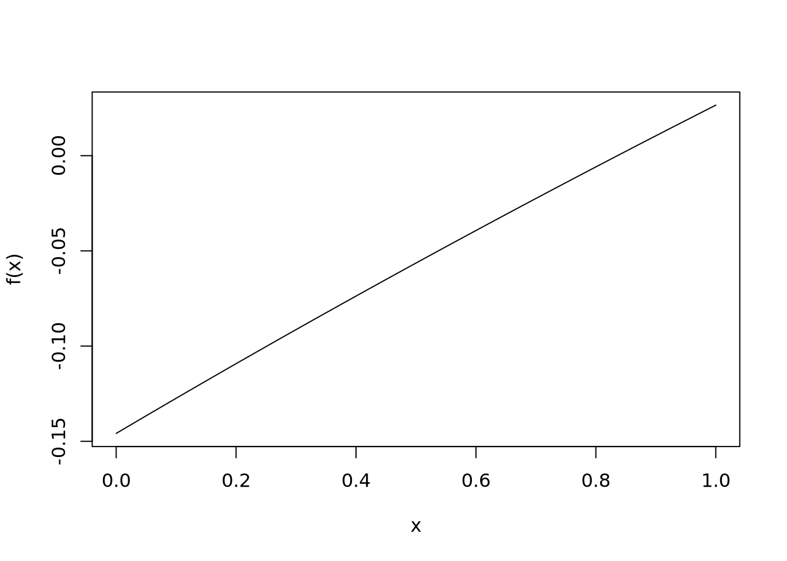

T <- 500
V <- 360
# Values @ 500 K
c_p_CO2 <- 1.014e3
c_v_CO2 <- 0.825e3
c_p_N2 <- 1.056e3
c_v_N2 <- 0.759e3Why do we need a separate mixture thermodynamics subject? Because, when two fluids are mixed, the individual properties do not necessarily add up to the total system, due to interaction effects.
As usual in Thermodynamics, we need a reference model, and the ideal model for mixtures is an ideal gas mixture, where certain properties are simply the weighted sum of the properties of the components.
Calculating the speed of sound of a mixture of ideal gases
As an example, let’s us solve Exercise 13-92 from [1]: a mixture of carbon dioxide and nitrogen flows through a convergent nozzle, and it exits at 500 K and a speed of 360 m/s, which is stated as the speed of sound of the mixture in that condition. What is the mass fraction of carbon dioxide in this mixture?
First, some context. Carbon dioxide and nitrogen are common combustion products: gases that are formed when hydrocarbons burn with air. Other compounds are formed, such as water vapor, sulfur oxides and excess oxygen, but depending on the fuel composition and air context, carbon dioxide and nitrogen dominate the gases, and we approximate the combustion gas as a mixture of just these two gases. Convergent nozzles are commonly employed in airplane jet turbines to accelerate the fluid (the combustion gases) and generate thrust.
Let \(x_{\mathrm{CO_2}}\) be the mass fraction of carbon dioxide in the mixture, and hence \(x_{\mathrm{N_2}} = 1 - x_{\mathrm{CO_2}}\).
We’ll assume both components are ideal gases in the problem’s conditions, and a mixture of ideal gases is itself an ideal gas. The speed of sound for these fluids is [1]:
\[ c^2 = k R T \]
where \(k\) is the ratio of isobaric to isovolumetric specific heats, and \(R\) is the difference between then:
\[ kR = \frac{c_p}{c_v}\left(c_p - c_v\right) \]
Now, the specific heats is a property that is additive:
\[ c_p = x_{\mathrm{CO_2}}c_{p,\mathrm{CO_2}} (T) + \left(1-x_{\mathrm{CO_2}}\right)c_{p,\mathrm{N_2}} (T) \]
\[ c_v = x_{\mathrm{CO_2}}c_{v,\mathrm{CO_2}} (T) + \left(1-x_{\mathrm{CO_2}}\right)c_{v,\mathrm{N_2}} (T) \] where, since the temperature is fixed, the individual values of specific heats can be read from a table.
If the given speed is the speed of sound, then \(V^2 = c^2 = kRT\), and with some rearranging the following function will achieve a zero:
\[ f(x_{\mathrm{CO_2}}) = \frac{V^2}{c_p T} - \frac{c_p-c_v}{c_v} \]
Implementation
The following R code should defines the values, including some read from specific heat tables:
Now, we define the function to be zeroed:
f <- function(x) {
c_p <- x*c_p_CO2 + (1-x)*c_p_N2
c_v <- x*c_v_CO2 + (1-x)*c_v_N2
V^2/(c_p*T) - (c_p - c_v)/c_v
}A good first check is to see how this function behaves:
curve(f,from=0,to=1)
There is indeed a zero! Let’s find it; the following built-in function finds a zero in the given interval:
x_CO2 <- uniroot(f,c(0,1))
print(x_CO2)$root
[1] 0.8359597
$f.root
[1] -1.041024e-06
$iter
[1] 3
$init.it
[1] NA
$estim.prec
[1] 6.103516e-05which gives the answer that a mixture of 83,6% of carbon dioxide and (100-83,6)% at 500 K will have a speed of sound of 360 m/s.
You see that basic assumption was adding up the specific heats, which is not valid always. For instance, in steam power plants, you have compressed steam flowing in the system; if you have air that infiltrate the pipes, you’ll have a mixture of steam and air, and at the typical high pressures of boilers the specific heat of this mixture will not be the sum of individual specific heats, weighted by the mass fractions. A more appropriate mixture rule will be required. The ideal gases model for combustion gases, tough, is widely used.
[1]: Çengel, Y. A., & Boles, M. A. Termodinâmica (7 ed.). Porto Alegre: AMGH, 2013. In Portuguese